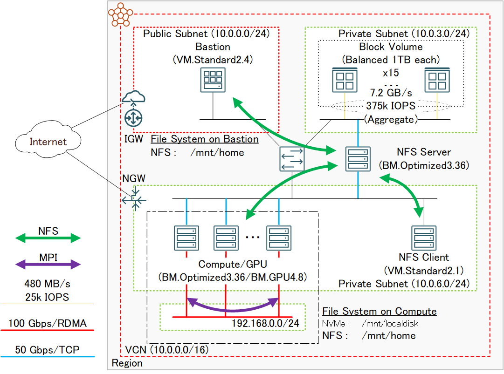
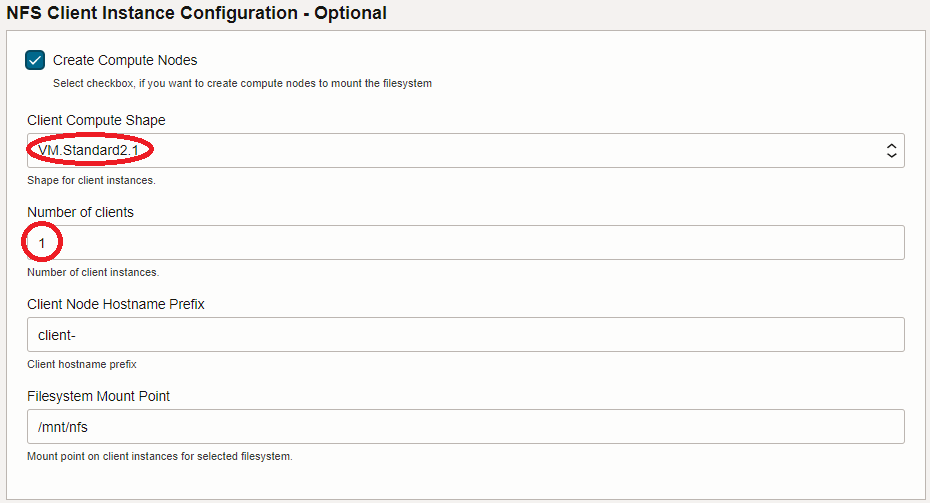
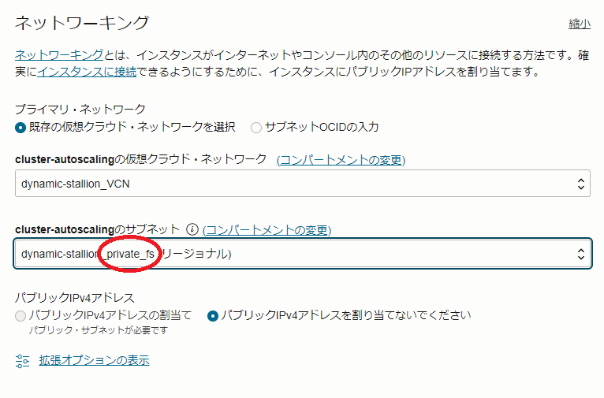
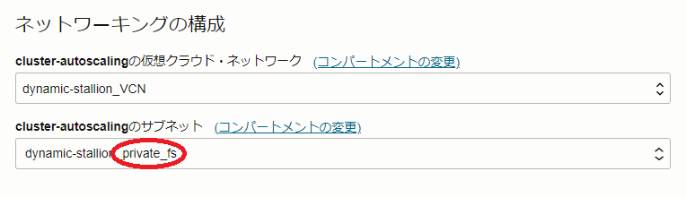

HPCクラスタやGPUクラスタは、そのフロントエンドとなるBastionノードを含む全てのノードで利用できるファイル共有ストレージが運用上必須です。
代表的なファイル共有ストレージの用途は、ユーザホームディレクトリですが、この領域は通常高いパフォーマンスより安定したサービスの提供が重視されるため、NFSがその有力な候補です。
OCIは、NFSのマネージドサービスとしてファイル・ストレージを提供しており、ファイルサーバ構築の必要無く簡単に利用できるため、HPC/GPUクラスタ用ユーザホームディレクトリの有力な候補です。
HPCクラスタスタック は、ファイル・ストレージの構築・セットアップを行う機能を持っており、ファイル・ストレージをユーザホームディレクトリに利用するHPC/GPUクラスタを自動構築することが出来ます。
これに対し、OCIのブロックストレージサービスであるブロック・ボリュームを使用してNFSサーバを構築し、この領域をユーザホームディレクトリとして使用することも可能です。
この手法は、ファイル・ストレージを使用する場合と比較して構築の手間がかかりますが、価格性能比の圧倒的に高いブロック・ボリュームの特徴を利用して、コストパフォーマンスを大幅に高めることが可能です。
ファイル・ストレージとブロック・ボリュームを使用したNFSサーバの価格と性能の比較は、チュートリアル ブロック・ボリュームでNFSサーバを構築する 前段の比較表を参照ください。
このチュートリアルは、チュートリアル ブロック・ボリュームでNFSサーバを構築する でブロック・ボリュームをアタッチしたベアメタルインスタンス BM.Optimized3.36 をNFSサーバとするファイル共有ストレージを構築し、チュートリアル HPCクラスタを構築する(基礎インフラ手動構築編) や GPUクラスタを構築する(基礎インフラ手動構築編) で基礎インフラとして構築するHPC/GPUクラスタのファイル共有ストレージとして利用する、コストパフォーマンスの優れたクラスタシステムを構築します。
所要時間 : 約2時間
0. 概要
本チュートリアルは、チュートリアル ブロック・ボリュームでNFSサーバを構築する とチュートリアル HPCクラスタを構築する(基礎インフラ手動構築編) かチュートリアル GPUクラスタを構築する(基礎インフラ手動構築編) を組み合わせて、以下のシステムを構築します。
この図中、左下の一点鎖線で囲まれたリソースを HPC/GPUクラスタを構築する(基礎インフラ手動構築編) で構築し、それ以外のリソースを ブロック・ボリュームでNFSサーバを構築する で構築します。

[ブロック・ボリュームでNFSサーバを構築する がデプロイするリソース]
- VCNと関連するネットワークリソース
- ブロック・ボリューム
- NFSサーバ用インスタンス
- Bastionノード
- NFSクライアント用インスタンス
[HPC/GPUクラスタを構築する(基礎インフラ手動構築編) がデプロイするリソース]
- クラスタ・ネットワーク
- 計算/GPUノード
本チュートリアルは、以上2個のチュートリアルを活用し、以下の手順でシステムを構築します。
- NFSサーバ構築（ブロック・ボリュームでNFSサーバを構築する を実施）
- NFSサーバ環境確認
- HPC/GPUクラスタ構築（HPC/GPUクラスタを構築する(基礎インフラ手動構築編) 実施）
- HPC/GPUクラスタ環境確認
- BastionノードNFSサーバ領域マウント
1. NFSサーバ構築
本章は、チュートリアル ブロック・ボリュームでNFSサーバを構築する の0章から4章までを実施し、NFSサーバを構築します。
この際、 1. スタックの作成 のステップ 5.4 NFS Client Instance Configuration - Optional フィールドで指定するNFSクライアント用インスタンスのシェイプとノード数は、このインスタンスが環境確認用途で最小限のリソースで十分であることから、以下に変更します。
- Client Compute Shape : VM.Standard2.1
-
Number of clients : 1

2. NFSサーバ環境確認
本章は、先に構築したNFSサーバ環境を確認し、後のHPC/GPUクラスタ構築時に必要な情報を収集します。
-
BastionノードSSH公開鍵確認
Bastionノードのopcユーザで以下コマンドを実行し、計算/GPUノードにSSHログインする際使用するSSH秘密鍵に対応する公開鍵を確認します。
この公開鍵は、後に構築するHPC/GPUクラスタに紐づける インスタンス構成 作成時に使用します。> ssh-keygen -y -f ~/.ssh/id_rsa -
NFSサーバマウント設定確認
NFSクライアントのopcユーザで以下コマンドを実行し、この出力を保存します。
ここで確認したNFSサーバマウント設定は、後に構築するHPC/GPUクラスタに紐づける cloud-init 設定ファイル（cloud-config）を作成する際に使用します。> grep vers=3 /etc/fstab | sed 's/\/mnt\/nfs /\/mnt\/home /g' 10.0.6.xxx:/mnt/nfsshare/exports /mnt/home nfs vers=3,defaults,noatime,nodiratime,bg,timeo=100,ac,actimeo=120,nocto,rsize=1048576,wsize=1048576,nolock,local_lock=none,proto=tcp,sec=sys,_netdev 0 0
3. HPC/GPUクラスタ構築
本章は、HPCクラスタの場合はチュートリアル HPCクラスタを構築する(基礎インフラ手動構築編) の1章から3章、GPUクラスタの場合はチュートリアル GPUクラスタを構築する(基礎インフラ手動構築編) の1章から2章と3章か4章を実施し、HPC/GPUクラスタを構築します。
この際、以下3点をチュートリアルの手順から変更します。
-
cloud-config修正
1.1 cloud-config作成 で作成する cloud-init 設定ファイル（cloud-config）で、先に保存したNFSマウント設定を/etc/fstabに書き込みマウントする処理を runmcd 領域に追加します。
以下は、この処理を追加したHPCクラスタ用（BM.Optimized3.36用）とGPUクラスタ用（BM.GPU4.8/BM.GPU.GM4.8用）のcloud-configで、NFSサーバIPアドレスの4フィールド目（xxx）の値を自身の環境に合わせて修正します。
[HPCクラスタ用]
#cloud-config runcmd: # # Mount NVMe local storage - parted -s /dev/nvme0n1 mklabel gpt - parted -s /dev/nvme0n1 -- mkpart primary xfs 1 -1 # To ensure partition is really created before mkfs phase - sleep 60 - mkfs.xfs -L localscratch /dev/nvme0n1p1 - mkdir -p /mnt/localdisk - echo "LABEL=localscratch /mnt/localdisk/ xfs defaults,noatime 0 0" >> /etc/fstab - mount /mnt/localdisk # # Mount NFS home directory - echo "10.0.6.xxx:/mnt/nfsshare/exports /mnt/home nfs vers=3,defaults,noatime,nodiratime,bg,timeo=100,ac,actimeo=120,nocto,rsize=1048576,wsize=1048576,nolock,local_lock=none,proto=tcp,sec=sys,_netdev 0 0" >> /etc/fstab - mkdir -p /mnt/home - mount /mnt/home # # Stop firewalld - systemctl stop firewalld - systemctl disable firewalld # # Set up cluster network interface - systemctl start oci-rdma-configure # # Start CN authentication renew service for OL8 HPC image to avoid 15min. hiatus of CN connection on deployment - systemctl start oci-cn-auth-renew.service[GPUクラスタ用]
#cloud-config yum_repos: # To install docker community edition ol7_developer: name: Oracle Linux $releasever Development Packages ($basearch) baseurl: https://yum$ociregion.$ocidomain/repo/OracleLinux/OL7/developer/$basearch/ enabled: true gpgcheck: true gpgkey: file:///etc/pki/rpm-gpg/RPM-GPG-KEY-oracle docker-ce-stable: name: Docker CE Stable - $basearch baseurl: https://download.docker.com/linux/centos/$releasever/$basearch/stable enabled: true gpgcheck: true gpgkey: https://download.docker.com/linux/centos/gpg # To install NVIDIA container libnvidia-container: name: libnvidia-container baseurl: https://nvidia.github.io/libnvidia-container/stable/centos7/$basearch enabled: true gpgcheck: true gpgkey: https://nvidia.github.io/libnvidia-container/gpgkey libnvidia-container-experimental: name: libnvidia-container-experimental baseurl: https://nvidia.github.io/libnvidia-container/experimental/centos7/$basearch enabled: true gpgcheck: true gpgkey: https://nvidia.github.io/libnvidia-container/gpgkey packages: # Install Docker community edition and NVIDIA container toolkit - docker-ce - nvidia-container-toolkit runcmd: # NVMe local storage setting - vgcreate nvme /dev/nvme0n1 /dev/nvme1n1 /dev/nvme2n1 /dev/nvme3n1 - lvcreate -l 100%FREE nvme - mkfs.xfs -L localscratch /dev/nvme/lvol0 - mkdir -p /mnt/localdisk - echo "LABEL=localscratch /mnt/localdisk/ xfs defaults,noatime 0 0" >> /etc/fstab - mount /mnt/localdisk # Mount NFS home directory - echo "10.0.6.xxx:/mnt/nfsshare/exports /mnt/home nfs vers=3,defaults,noatime,nodiratime,bg,timeo=100,ac,actimeo=120,nocto,rsize=1048576,wsize=1048576,nolock,local_lock=none,proto=tcp,sec=sys,_netdev 0 0" >> /etc/fstab - mkdir -p /mnt/home - mount /mnt/home # Stop firewalld - systemctl stop firewalld - systemctl disable firewalld # Set up cluster network interface - systemctl start oci-rdma-configure # Expand root file system to those set by instance configuration - /usr/libexec/oci-growfs -y # Pull Horovod/TensorFlow docker images - systemctl start docker - systemctl enable docker - docker pull horovod/horovod:latest - docker pull nvcr.io/nvidia/tensorflow:22.11-tf2-py3 -
計算/GPUノード接続サブネット修正
1.2 インスタンス構成作成 のステップ 3.5 ネットワーキング フィールド で指定する計算/GPUノードを接続するサブネットで、以下のように _private_fs で終わる名称のサブネットを指定します。

また、 1.3 クラスタ・ネットワーク作成 のステップ 3.3 ネットワーキングの構成 フィールド で指定する計算/GPUノードを接続するサブネットで、以下のように _private_fs で終わる名称のサブネットを指定します。

-
計算/GPUノードSSH接続用秘密鍵に対応するSSH公開鍵修正
1.2 インスタンス構成作成 のステップ 3.6 SSHキーの追加 フィールド で、先にBastionノードで確認した公開鍵を指定します。
4. HPC/GPUクラスタ環境確認
本章は、デプロイされた計算/GPUノードにログインし、環境を確認します。
計算/GPUノードは、以下のようにNFSサーバの領域が/mnt/homeにマウントされています。
> df -h /mnt/home
Filesystem Size Used Avail Use% Mounted on
10.0.6.xxx:/mnt/nfsshare/exports 15T 33M 15T 1% /mnt/home
5. BastionノードNFSサーバ領域マウント
本章は、BastionノードでNFSサーバ領域をマウントします。
このマウントは、/mnt/home以下に作成されるユーザホームディレクトリをBastionノードと計算/GPUノードで共有するために必要です。
Bastionノードのopcユーザで以下コマンドを実行し、NFSサーバ領域をマウントします。NFSサーバIPアドレスの4フィールド目（xxx）の値は、自身の環境に合わせて修正します。
> echo "10.0.6.xxx:/mnt/nfsshare/exports /mnt/home nfs vers=3,defaults,noatime,nodiratime,bg,timeo=100,ac,actimeo=120,nocto,rsize=1048576,wsize=1048576,nolock,local_lock=none,proto=tcp,sec=sys,_netdev 0 0" | sudo tee -a /etc/fstab
> sudo mkdir -p /mnt/home
> sudo mount /mnt/home
> df -h /mnt/home
Filesystem Size Used Avail Use% Mounted on
10.0.6.xxx:/mnt/nfsshare/exports 15T 34M 15T 1% /mnt/home
これで、このチュートリアルは終了です。